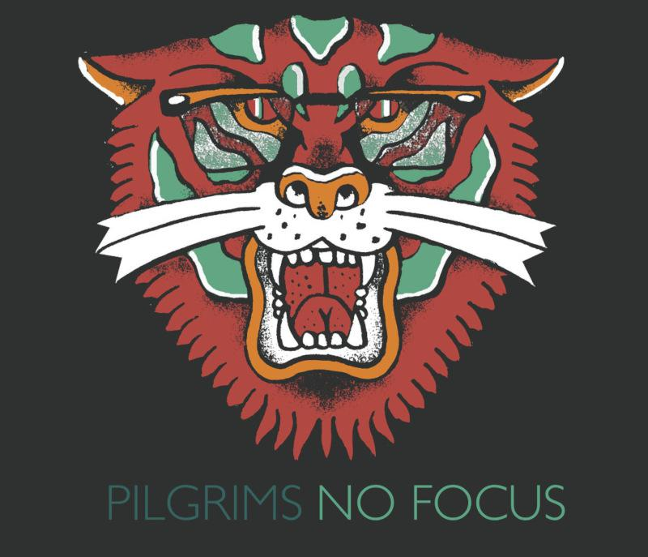

Musical Endeavours
Music has been one of the most formative and foundational constants in my life. I'm very proud of these projects...
The Pilgrims
A band completely designed around the virtue of having fun.

The Jobz
Extra-dimensional fight-or-flight neo-post-alt-suit rock.